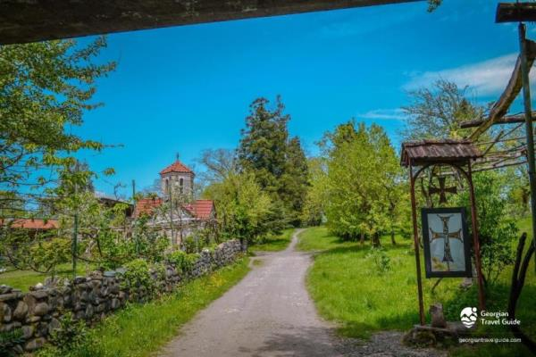
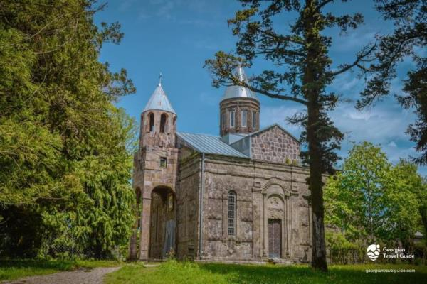
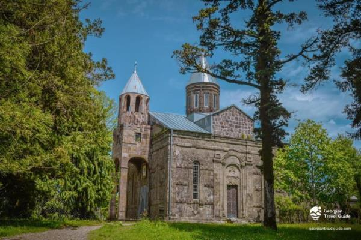

სამება ჯიხეთის დედათა მონასტერი
XIX საუკუნის ეკლასია ლანჩხუთის მუნიციპალიტეტში. მოქმედებს როგორც დედათა მონასტერი. იგი მდებარეობს ნიგოითის მთაზე ზღვის დონიდან 250 მეტრზე. მთავარი, ღვთის მშობლის ტაძრად მიყვანების ტაძარი აგებულია 1896 წელს ოზურგეთელი ილარიონ მენაბდის მიერ. 1987 წელს ტაძარს მიუშენდა სამრეკლო. ასევე სამონასტრო ქომპლექტის ეზოში აგებულია წმინდა გიორგის ბაზილიკური ტიპის ტაძარი.(1988 წელი). ასევე წმ. იოანე ნათლისცემლის მუცლადრების ტაძარი. (2002 წელი). ყოველ 4 დეკემბერს ღვთისმშობლის ტაძრად მიყვანების დღეს - მონასტერში იმართება დღესასწაული "ჯიხეთობა". არსებობს ლეგენდა ჯიხეთის მონასტერზე: ჯიხეთის მთაზე, მეტად მიუდგომელ ალაგს ყოფილა ნაგები მენელსაცხებლე დედათა სახელობის მონასტერი. დედებს მეტად აწვალებდათ უწყლობა, ამიტომ გადაუწყვეტიათ ტაძრისათვის ახალი ადგილი შეერჩიათ. ეს არჩევანი, წარღვნის მსგავსად, სამი მტრედისათვის მიუნდვიათ. იმ ადგილას სადაც მტრედები მიფრინდნენ აუშენებიათ ახალი მონასტერი. სავარაუდოდ ჯიხეთის მთაზე ერთ დროს ციხე იყო აღმართული, რადგან „ჯიხა“ ზანურად ციხეს ნიშნავს. ზეპირი გადმოცემის თანახმად ეკლესია თამარ მეფის დროს აშენდა, თუმცა XIX საუკუნეში უკვე ნანგრევებიღა იყო შემორჩენილი. 1886 წელს ჯიხეთის ტერიტორიაზე დასახლდა მონაზონი ელენე მგალობლიშვილი. თავადმა მაჭუტაძეებმა მონაზვნებს მიწები შესწირეს. მათ 1893 წელს სინოდისგან ტაძრის მშენებლობის უფლება მოიპოვეს და 1896 ილარიონ მენაბდის თაოსნობით ააშენეს მთავარი, ღვთისმშობლის ტაძრად მიყვანების ქვის ტაძარი. ელენა იყო მონასტრის წინამძღვარი 1896 წლიდან 1914 წლამდე. მონასტერში სკოლაც გაუხსნიათ. აქ ასწავლიდნენ წერა-კითხვას, საოჯახო საქმესა და ხელგარჯილობას. მონასტრის ისტორიული წყაროების მიხედვით ჯიხეთის მონასტერს მჭიდრო ურთიერთობა ჰქონდა ათონის იოანე მახარებლის მონასტერთან. 1905 წელს იოანე მახარებლის მონასტრის წინამძღვარმა მღვდელ-მონაზონმა იონამ ჯიხეთის მონასტერს ათონიდან ღვთისმშობლის ხატი გამოუგზავნა. ამ მიდამოებში პირველ საუკუნეში ქრისტეს პირველმა მოციქულმა, ანდრია პირველწოდებულმა იქადაგა და ეკლესიები და მონასტრები დაარსა. შემდგომ საუკუნეებში აქ ნიკეის I მსოფლიო კრებაზე დასავლეთ საქართველოდან ერთ-ერთი მღვდელმთავარიც მონაწილეობდა.
 
